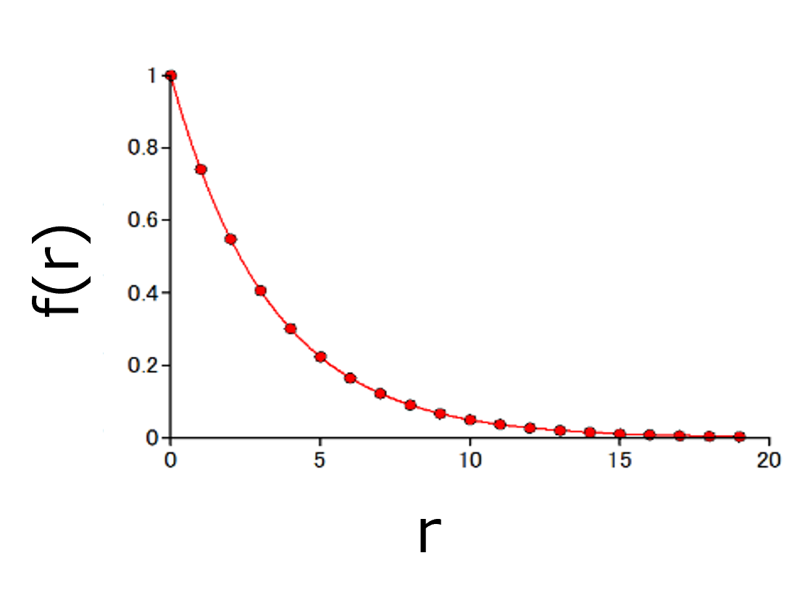
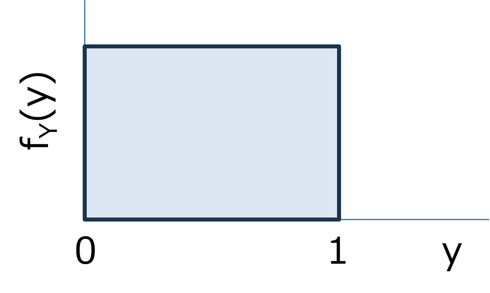
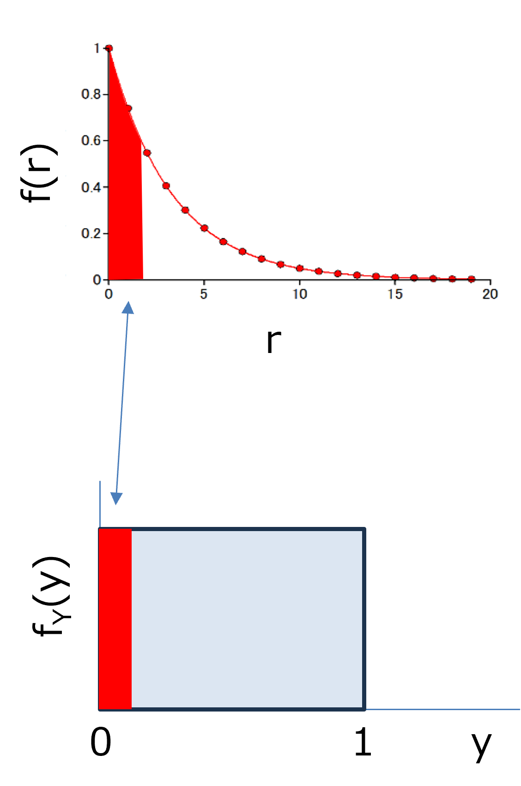

ランダムな数の発生方法-01
0．基本的な考え方
乱数から任意の分布データを作成するさいに，なぜ，累積関数を使うか，という問題ですが，とりあえず，ここ，に説明を行いました．
しかし，一般的には，逆関数法，という考え方を用いているようで，どのサイトも非常に簡単に証明しています．
しかし．．．．私にはなかなか直感的に理解することができず，色々探していたところ，ここ，の説明が一番しっくり行きました．
こちらのサイトでは，ややこしい分布の解説を行っていますが，今回は単純な分布の場合について考えていきます．
まず，ある確率密度分布，f(r)，を考えます．

図では指数分布を考えましたが，なんでもいいはずです．
この分布と，乱数（０～１）の一様分布，fY(y)，とを対応付ければいいことになります．

つまり，

確率密度分布のある領域の確率と一様分布のある領域の確率を対応付けるような関数，
\(\Large r = g(y) \)
を導き出せばいいということです．
つまり，
\(\Large \displaystyle \int_0^r f(r') \cdot dr' = \displaystyle \int_0^y f_Y(y') \cdot dy' \)
となることになります．
ここで，一様分布はフラットな確率密度になるので，
\(\Large \displaystyle \int_0^y f_Y(y') \cdot dy' = y \)
となります．，
また，左辺は，確率密度関数の累積密度関数，F(r)，となるので，
\(\Large \displaystyle F(r) = \int_0^r f(r') \cdot dr' = \displaystyle \int_0^y f_Y(y') \cdot dy' =y \)
\(\Large \displaystyle F(r) = y \)
\(\Large \displaystyle y = F^{-1}(y) = F^{-1} \{ rand() \} \)
となり，累積密度関数の逆関数を用いればいいことになります．
次に，当初説明してきた解説方法にいきましょう．